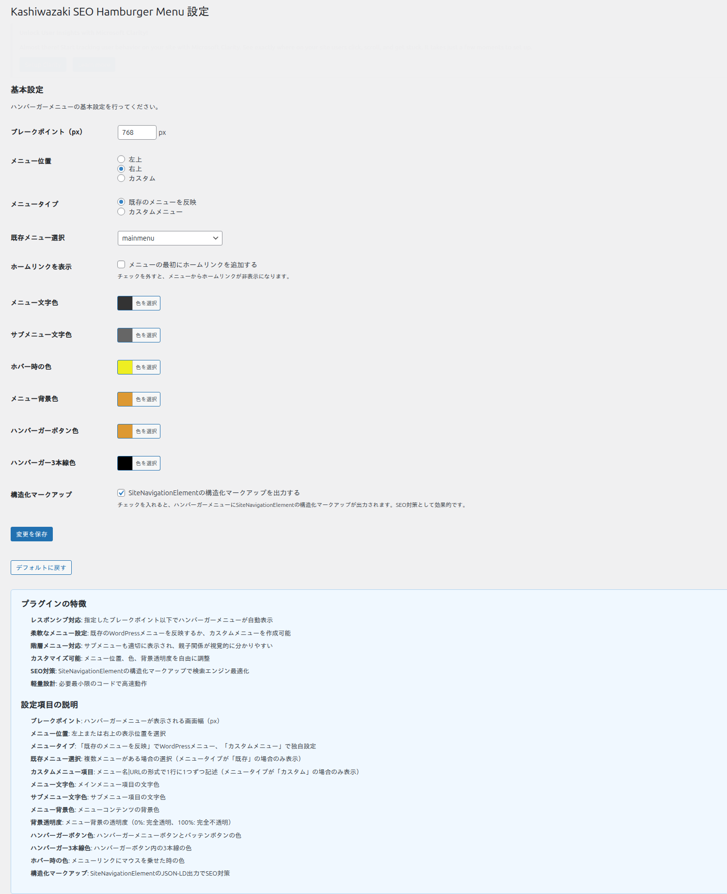
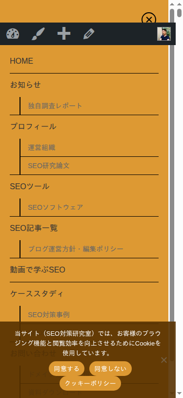

メニュー設定
ハンバーガーメニューの表示位置、カラー、メニュー項目などの詳細設定について説明します。
メニュー位置
ハンバーガーメニューの表示位置を設定できます。

フロントエンド表示例

| 位置 | 説明 |
|---|---|
| 左（Left） | 画面の左側からスライドインするメニューを表示します |
| 右（Right） | 画面の右側からスライドインするメニューを表示します |
| カスタム（Custom） | CSS でカスタム位置を指定できます |
ブレークポイント設定
ハンバーガーメニューが表示される画面幅のしきい値をピクセル単位で設定します。設定値以下の画面幅でメニューが自動的に表示されます。
一般的なブレークポイントの目安: スマートフォンのみ 480px、タブレット以下 768px、小型デスクトップ以下 1024px
メニューソース
ハンバーガーメニューに表示するメニューのソースを選択します。
既存の WordPress メニューを使用
WordPress の 外観 > メニュー で作成済みのメニューを選択して使用します。メニューの管理を一元化したい場合に便利です。
カスタムメニュー項目
プラグインの設定画面でメニュー項目を個別に追加・編集します。既存のメニュー構造に依存しない独自のナビゲーションを構築できます。
ホームリンク
メニューの先頭にホーム（トップページ）へのリンクを自動的に追加するかどうかを切り替えできます。
カラー設定
6種類のカラーをカスタマイズできます。すべてカラーピッカーで直感的に設定可能です。
| 設定項目 | 説明 |
|---|---|
| メニューテキスト色 | メニュー項目のテキスト色を設定します |
| サブメニューテキスト色 | サブメニュー項目のテキスト色を設定します |
| ホバー色 | メニュー項目にマウスオーバーした際の色を設定します |
| 背景色 | メニューパネルの背景色を設定します |
| ハンバーガーボタン色 | ハンバーガーボタンの背景色を設定します |
| ハンバーガーライン色 | ハンバーガーアイコンの3本線の色を設定します |
テキスト色と背景色のコントラスト比を十分に確保してください。WCAG 2.1 では、通常テキストに対して 4.5:1 以上のコントラスト比が推奨されています。
アニメーション
メニューの開閉時にスライドアニメーションが適用されます。メニュー位置の設定に応じて、左または右からスライドインする動作になります。
構造化データ（JSON-LD）
本プラグインは SiteNavigationElement スキーマを JSON-LD 形式で自動出力します。メニュー項目を設定すると、以下のような構造化データがページの <head> セクションに出力されます。
{
"@context": "https://schema.org",
"@type": "SiteNavigationElement",
"name": "メニュー項目名",
"url": "https://example.com/page/"
}この構造化データにより、検索エンジンがサイトのナビゲーション構造を正確に理解できるようになります。設定は自動的に行われるため、追加の操作は不要です。
構造化データの出力は、メニュー項目が設定されている場合にのみ行われます。メニュー項目が空の場合は出力されません。